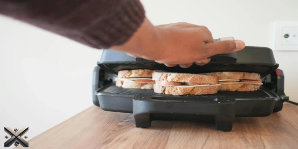
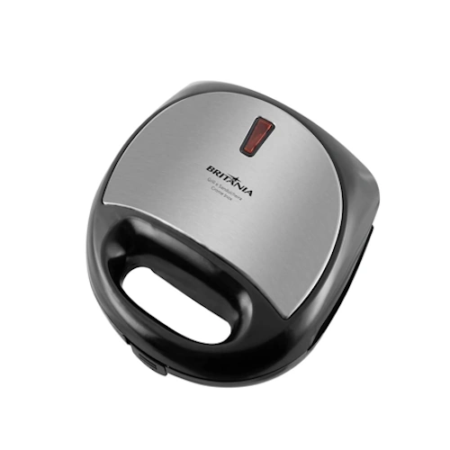
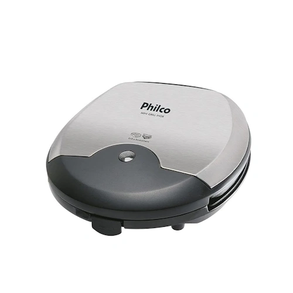
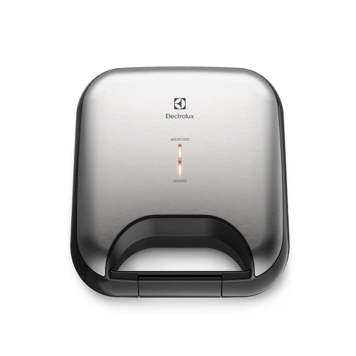
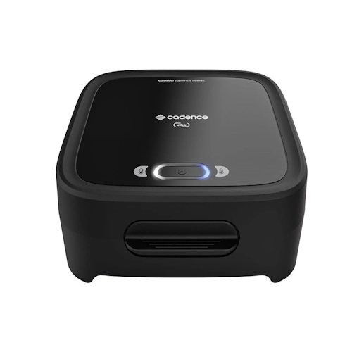
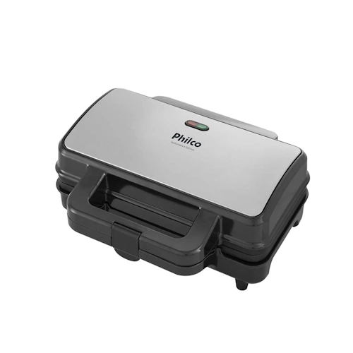

Quem não gosta de um sanduíche quentinho? Uma boa sanduicheira é essencial na cozinha, mas escolher o modelo ideal pode ser um desafio. Para te ajudar, testamos vários modelos e selecionamos as cinco melhores sanduicheiras do mercado em 2025, garantindo lanches crocantes e saborosos sempre que a fome bater.
Além do sabor e praticidade, levamos em conta aspectos como durabilidade, segurança e facilidade de limpeza. Afinal, ninguém quer um eletrodoméstico difícil de manter. Com tantas opções no mercado, saber quais modelos realmente valem o investimento pode te ajudar a economizar tempo e dinheiro.

A sanduicheira grill é um eletrodoméstico indispensável para quem deseja unir praticidade e sabor no dia a dia. Com ela, é possível preparar desde um sanduíche crocante até refeições completas, como carnes grelhadas e legumes assados, sem complicação.
Graças às chapas antiaderentes, a limpeza da sanduicheira elétrica se torna simples, evitando que os alimentos grudem. Além disso, modelos mais modernos possuem controle de temperatura, permitindo escolher o nível ideal de tostagem.
Para quem busca eficiência, a potência da sanduicheira faz toda a diferença. Quanto maior a potência, mais rápido e uniforme será o preparo. Algumas opções contam com chapas removíveis, facilitando ainda mais a higienização e possibilitando o uso para diversas receitas.
Antes de comprar, leve em conta fatores como tamanho, potência, tipo de chapa e funções extras. Esses detalhes garantem um aparelho durável e que realmente atenda às suas necessidades.
Seja para um café da manhã prático ou um jantar rápido, a sanduicheira grill é a escolha perfeita para quem deseja rapidez e sabor em todas as refeições.

Se você busca uma opção acessível e eficiente, a Britânia Crome Inox é uma excelente escolha. Com 750W de potência, ela prepara dois sanduíches simultaneamente. Suas chapas onduladas antiaderentes garantem um cozimento uniforme e facilitam a limpeza. Além disso, conta com base antiderrapante, trava de fechamento e luz indicadora de funcionamento. Sua estrutura compacta e leve permite fácil armazenamento e transporte, ideal para quem tem pouco espaço na cozinha. Seu design moderno com acabamento em inox também combina bem com diferentes estilos de decoração. Se você deseja um modelo funcional e acessível, essa sanduicheira pode ser a escolha certa. Faixa de preço: R$ 90.

A Philco Mini Inox é ideal para quem busca praticidade e rapidez. Com 750W de potência e chapas antiaderentes onduladas, proporciona sanduíches crocantes sem grudar. Seu design compacto ocupa pouco espaço e suas luzes indicadoras garantem mais segurança no preparo. Além disso, seu sistema de aquecimento uniforme evita que os alimentos fiquem com partes queimadas ou mal cozidas. O cabo com enrolador facilita o armazenamento e previne acidentes. Essa sanduicheira também pode ser usada para grelhar outros alimentos, como carnes finas e vegetais, aumentando sua versatilidade. Preço médio: R$ 113.

Para quem deseja uma sanduicheira de alta durabilidade, a Electrolux ESG20 é uma excelente opção. Com tecnologia de aquecimento rápido e acabamento em inox escovado, ela combina eficiência e elegância. Possui alça térmica, pés antiderrapantes e pode ser armazenada na posição vertical. Seu design premium confere um toque sofisticado à cozinha, enquanto suas placas antiaderentes evitam o acúmulo de sujeira e resíduos de alimentos. Além disso, sua tampa conta com um sistema de travamento que ajuda no preparo uniforme do sanduíche. É uma ótima escolha para quem deseja aliar qualidade e praticidade. Valor médio: R$ 151.

Se procura um modelo com botão liga/desliga, a Cadence Click é a escolha perfeita. Suas chapas antiaderentes mais profundas oferecem 80% mais espaço, permitindo maior variedade de lanches. Conta com luzes indicadoras, pés antiderrapantes e design moderno. A superfície superior em formato grill ajuda a selar melhor os ingredientes, garantindo um sanduíche mais crocante. Sua base estável reduz o risco de tombamentos, tornando o uso mais seguro. Além de sanduíches, também pode ser usada para grelhar carnes, queijos e até preparar omeletes. É uma opção versátil para quem gosta de experimentar novas receitas. Faixa de preço: R$ 109.

A campeã da nossa lista é a Philco PGR021. Com chapas antiaderentes e capacidade para dois sanduíches simultâneos, ela garante um preparo rápido e prático. Pode ser armazenada na posição vertical, possui alça para transporte e trava de segurança. Seu design moderno e acabamento resistente proporcionam um ótimo custo-benefício. Além disso, sua distribuição de calor permite que os alimentos fiquem cozidos de maneira homogênea, sem a necessidade de virar o pão. Se você busca uma sanduicheira durável, funcional e segura, esse modelo é a melhor escolha. Seu preço varia entre R$ 198.
Agora que você conhece as melhores sanduicheiras de 2025, qual delas faz mais sentido para sua cozinha? Deixe sua opinião nos comentários! Todas as opções apresentadas oferecem ótimo custo-benefício, mas a escolha ideal depende das suas necessidades. Se busca um modelo básico e acessível, a Britânia Crome Inox pode ser uma boa alternativa. Para quem prefere mais espaço e funcionalidades extras, a Philco PGR021 é uma excelente opção. Independentemente da sua escolha, uma boa sanduicheira pode tornar suas refeições mais práticas e saborosas. Não esqueça de compartilhar este artigo com aquele amigo que está buscando uma nova sanduicheira.
Nota: Os preços podem variar conforme a disponibilidade e promoções do mercado.